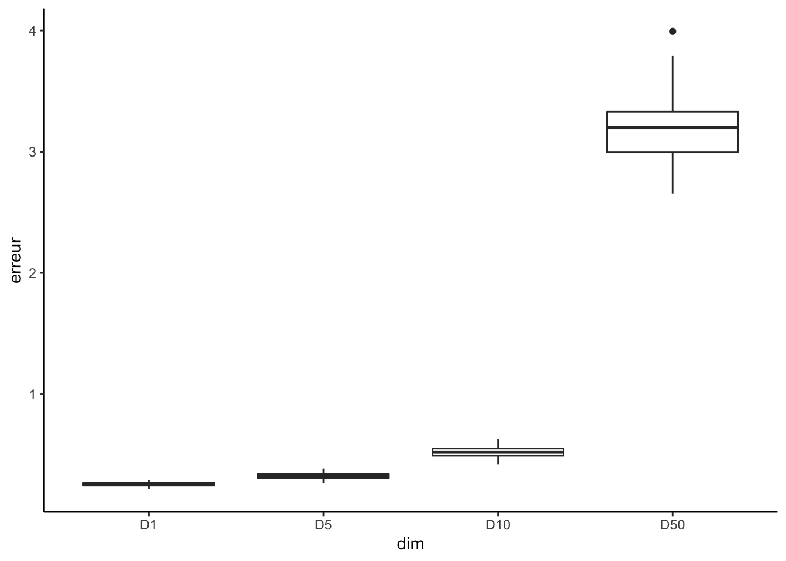
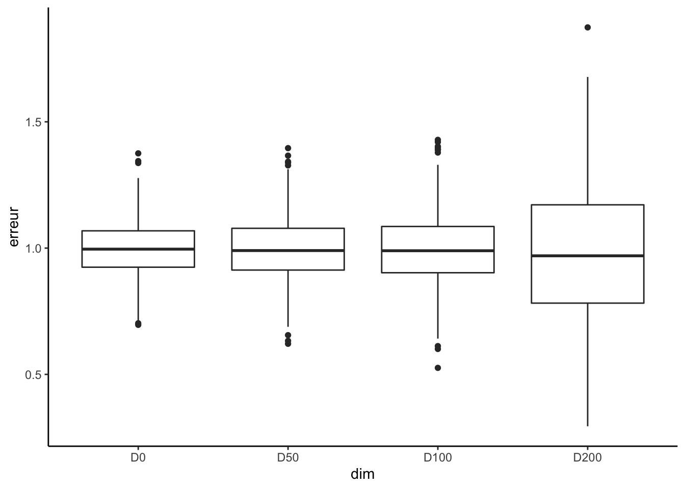

Chapitre 1 Introduction à la grande dimension
Nous proposons ici d’illustrer le problème de la grande dimension en régression. On commencera par étudier, à l’aide de simulation, ce problème pour l’estimateurs des \(k\) plus proches voisins, puis pour les estimateurs des moindres carrés dans le modèle linéaire. Quelques exercices sont ensuite proposées pour calculer les vitesses de convergence de ces estimateurs dans des modèles simples.
1.1 Fléau de la dimension pour les plus proches voisins
La fonction suivante permet de générer un échantillon d’apprentissage et un échantillon test selon le modèle \[Y=X_1^2+\dots+X_p^2+\varepsilon\] où les \(X_j\) sont uniformes i.i.d de loi uniorme sur \([0,1]\) et le bruit \(\varepsilon\) suit une loi \(\mathcal N(0,0.5^2)\).
> simu <- function(napp=300,ntest=500,p=3,graine=1234){
+ set.seed(graine)
+ n <- napp+ntest
+ X <- matrix(runif(n*p),ncol=p)
+ Y <- apply(X^2,1,sum)+rnorm(n,sd=0.5)
+ Yapp <- Y[1:napp]
+ Ytest <- Y[-(1:napp)]
+ Xapp <- data.frame(X[1:napp,])
+ Xtest <- data.frame(X[-(1:napp),])
+ return(list(Xapp=Xapp,Yapp=Yapp,Xtest=Xtest,Ytest=Ytest))
+ }
> df <- simu(napp=300,ntest=500,p=3,graine=1234)La fonction knn.reg du package FNN permet de construire des estimateurs des \(k\) plus proches voisins en régression. On peut par exemple faire du 3 plus proches voisin avec
Parmi toutes les sorties proposées par cette fonction on a notamment
qui renvoie la somme des carrés des erreurs de prévision par validation croisée Leave-One-Out (LOO). On peut ainsi obtenir l’erreur quadratique moyenne par LOO
Construire la fonction sel.k qui admet en entrée :
- une grille de valeurs possibles de plus proches voisins (un vecteur).
- une matrice Xapp de dimension \(n\times p\) qui contient les valeurs variables explicatives.
- un vecteur Yapp de dimension \(n\) qui contient les valeurs de la variable à expliquer
et qui renvoie en sortie la valeur de \(k\) dans la grille qui minimise l’erreur LOO présentée ci-dessus.
> sel.k <- function(K_cand=seq(1,50,by=5),Xapp,Yapp){ + ind <- 1 + err <- rep(0,length(K_cand)) + for (k in K_cand){ + modkppv <- knn.reg(train=Xapp,y=Yapp,k=k) + err[ind] <- modkppv$PRESS/max(c(nrow(Xapp),1)) + ind <- ind+1 + } + return(K_cand[which.min(err)]) + }Une fois la fonction créée, on peut calculer l’erreur de l’estimateur sélectionné sur un échantillon test avec
On souhaite comparer les erreurs des règles des \(k\) plus proches voisins en fonction de la dimension. On considère 4 dimensions collectées dans le vecteur
DIMet la grille de valeurs de \(k\) suivantes :Pour chaque valeur de dimension répéter \(B=100\) fois :
- simuler un échantillon d’apprentissage de taille 300 et test de taille 500
- calculer la valeur optimale de \(k\) dans K_cand grâce à sel.k
- calculer l’erreur de l’estimateur sélectionné sur un échantillon test.
On pourra stocker les résultats dans une matrice de dimension \(B\times 4\).
> B <- 100 > mat.err <- matrix(0,ncol=length(DIM),nrow=B) > for (p in 1:length(DIM)){ + for (i in 1:B){ + df <- simu(napp=300,ntest=500,p=DIM[p],graine=1234*p+2*i) + k.opt <- sel.k(K_cand,df$Xapp,df$Yapp) + prev <- knn.reg(train=df$Xapp,y=df$Yapp,test=df$Xtest,k=k.opt)$pred + mat.err[i,p] <- mean((prev-df$Ytest)^2) + } + }A l’aide d’indicateurs numériques et de boxplots, comparer la distribution des erreurs en fonction de la dimension.
> df1 <- pivot_longer(df,cols=everything(),names_to="dim",values_to="erreur")
> df1 <- df1 %>% mutate(dim=fct_relevel(dim,nom.dim))
> ggplot(df1)+aes(x=dim,y=erreur)+geom_boxplot()+theme_classic()
- Conclure
Les estimateurs sont moins précis lorsque la dimension augmente. C’est le fléau de la dimension.
1.2 Influence de la dimension dans le modèle linéaire
En vous basant sur l’exercice précédent, proposer une illustration qui peut mettre en évidence la précision d’estimation dans le modèle linéaire en fonction de la dimension. On pourra par exemple considérer le modèle linaire suivant \[Y=X_1+0X_2+\dots+0X_p+\varepsilon\] et étudier la performance de l’estimateur MCO du coefficient de \(X_1\) pour différentes valeurs de \(p\). Par exemple avec \(p\) dans le vecteur
Les données pourront être générées avec la fonction suivante
> n <- 250
> p <- 1000
> X <- matrix(runif(n*p),ncol=p)
> simu.lin <- function(X,graine){
+ set.seed(graine)
+ Y <- X[,1]+rnorm(nrow(X),sd=0.5)
+ df <- data.frame(Y,X)
+ return(df)
+ }On s’intéresse à la distribution de \(\widehat\beta_1\) en fonction de la dimension. Pour ce faire, on calcule un grand nombre d’estimateurs de \(\widehat\beta_1\) pour différentes valeurs de \(p\).
> B <- 500
> matbeta1 <- matrix(0,nrow=B,ncol=length(DIM))
> for (i in 1:B){
+ dftot <- simu.lin(X,i+1)
+ for (p in 1:length(DIM)){
+ dfp <- dftot[,(1:(2+DIM[p]))]
+ mod <- lm(Y~.,data=dfp)
+ matbeta1[i,p] <- coef(mod)[2]
+ }
+ }On compare, pour chaque dimension considérée, les distributions de \(\widehat\beta_1\) :
en étudiant le biais et la variance
en visualisant la distribution avec un boxplot
> df1 <- gather(df,key="dim",value="erreur") > df1 <- df1 %>% mutate(dim=fct_relevel(dim,nom.dim)) > ggplot(df1)+aes(x=dim,y=erreur)+geom_boxplot()+theme_classic()
On retrouve bien que la dimension impacte notamment la variance des estimateurs.
1.3 Exercices
Soit \(X^{(1)}=(X_1^{(1)},\dots,X_p^{(1)})\) et \(X^{(2)}=(X_1^{(2)},\dots,X_p^{(2)})\) deux variables aléatoires indépendantes de loi uniforme sur l’hypercube \([0,1]^p\). Montrer que \[\mathbf E[\|X^{(1)}-X^{(2)}\|^2]=\frac{p}{6}\quad\text{et}\quad\sigma[\|X^{(1)}-X^{(2)}\|^2]\approx 0.2\sqrt{p}.\]
Soit \(U\) et \(U^\prime\) deux variables aléatoires indépendantes de loi uniforme sur \([0,1]\). On a \[\mathbf E[\|X^{(1)}-X^{(2)}\|^2]=\sum_{k=1}^p\mathbf E\left[\left(X_k^{(1)}-X_k^{(2)}\right)\right]=p\mathbf E[(U-U^\prime)^2]=p(2\mathbf E[U^2]-2\mathbf E[U]^2)=\frac{p}{6}\] car \(\mathbf E[U^2]=1/3\) et \(\mathbf E[U]=1/2\). De même \[\sigma[\|X^{(1)}-X^{(2)}\|^2]=\sqrt{\sum_{k=1}^p\mathbf V\left[\left(X_k^{(1)}-X_k^{(2)}\right)\right]}=\sqrt{p\mathbf V[(U^\prime-U)^2]}\approx 0.2\sqrt{p}\] car \[\mathbf E\left[(U^\prime-U)^4\right]=\int_0^1\int_0^1(x-y)^4\,\mathrm{d}x\mathrm{d}y=\frac{1}{15}\] et donc \(\mathbf V[(U^\prime-U)^2]=1/15-1/36\approx 0.04\).
On considère le modèle de régression \[Y_i=m(x_i)+\varepsilon_i,\quad i=1,\dots,n\] où \(x_1,\dots,x_n\in\mathbb R^d\) sont déterministes et \(\varepsilon_1,\dots,\varepsilon_n\) sont des variables i.i.d. d’espérance nulle et de variance \(\sigma^2<+\infty\). On désigne par \(\|\,.\,\|\) la norme Euclidienne dans \(\mathbb R^d\). On définit l’estimateur localement constant de \(m\) en \(x\in\mathbb R^d\) par : \[\hat m(x)=\mathop{\mathrm{argmin}}_{a\in\mathbb R}\sum_{i=1}^n(Y_i-a)^2K\left(\frac{\|x_i-x\|}{h}\right)\] où \(h>0\) et pour \(u\in\mathbb R,K(u)=\mathbf 1_{[0,1]}(u)\). On suppose que \(\sum_{i=1}^nK\left(\frac{\|x_i-x\|}{h}\right)>0\).
Donner la forme explicite de \(\hat m(x)\).
En annulant la dérivée par rapport à \(a\), on obtient \[\hat m(x)=\frac{\sum_{i=1}^nY_iK\left(\frac{\|x_i-x\|}{h}\right)}{\sum_{i=1}^nK\left(\frac{\|x_i-x\|}{h}\right)}.\]
Montrer que \[\mathbf V[\hat m(x)]= \frac{\sigma^2}{\sum_{i=1}^nK\left(\frac{\|x_i-x\|}{h}\right)}\] et \[\mathbf E[\hat m(x)]-m(x)=\frac{\sum_{i=1}^n(m(x_i)-m(x))K\left(\frac{\|x_i-x\|}{h}\right)}{\sum_{i=1}^nK\left(\frac{\|x_i-x\|}{h}\right)}.\]
Ces propriétés se déduisent directement en remarquant que \(\mathbf V[Y_i]=\sigma^2\) et \(\mathbf E[Y_i]=m(x_i)\).
On suppose maintenant que \(m\) est Lipschitzienne de constante \(L\), c’est-à-dire que \(\forall (x_1,x_2)\in\mathbb R^d\times\mathbb R^d\) \[|m(x_1)-m(x_2)|\leq L\|x_1-x_2\|.\] Montrer que \[|\textrm{biais}[\hat m(x)]|\leq Lh.\]
On a \(|m(x_i)-m(x)|\leq L\|x_i-x\|\). Or \[K\left(\frac{\|x_i-x\|}{h}\right)\] est non nul si et seulement si \(\|x_i-x\|\leq h\). Donc pour tout \(i=1,\dots,n\) \[L\|x_i-x\|K\left(\frac{\|x_i-x\|}{h}\right)\leq Lh K\left(\frac{\|x_i-x\|}{h}\right).\] D’où le résultat.
On suppose de plus qu’il existe une constante \(C_1\) telle que \[C_1\leq\frac{\sum_{i=1}^n\mathbf 1_{B_h}(x_i-x)}{n\textrm{Vol}(B_h)},\] où \(B_h=\{u\in\mathbb R^d:\|u\|\leq h\}\) est la boule de rayon \(h\) dans \(\mathbb R^d\) et \(\textrm{Vol}(A)\) désigne le volume d’un ensemble \(A\subset\mathbb R^d\). Montrer que \[\mathbf V[\hat m(x)]\leq\frac{C_2\sigma^2}{nh^d},\] où \(C_2\) est une constante dépendant de \(C_1\) et \(d\) à préciser.
On a \[\mathbf V[\hat m(x)]= \frac{\sigma^2}{\sum_{i=1}^nK\left(\frac{\|x_i-x\|}{h}\right)}=\frac{\sigma^2}{\sum_{i=1}^n\mathbf 1_{B_h}(x_i-x)}.\] Or \[\sum_{i=1}^n\mathbf 1_{B_h}(x_i-x)\geq C_1n\textrm{Vol}(B_h)\geq C_1\gamma_dnh^d\] où \(\gamma_d\) désigne le volume e la boule unité en dimension \(d\). On a donc \[\mathbf V[\hat m(x)]\leq \frac{\sigma^2}{C_1\gamma_dnh^d}.\]
Déduire des questions précédentes un majorant de l’erreur quadratique moyenne de \(\hat m(x)\).
On déduit \[\mathbf E[(\hat m(x)-m(x))^2]\leq L^2h^2+\frac{C_2\sigma^2}{nh^d}.\]
Calculer \(h_{\text{opt}}\) la valeur de \(h\) qui minimise ce majorant. Que vaut ce majorant lorsque \(h=h_{\text{opt}}\) ? Comment varie cette vitesse lorsque \(d\) augmente ? Interpréter.
Soit \(M(h)\) le majorant. On a \[M(h)^\prime=2hL^2-\frac{C_2\sigma^2d}{n}h^{-d-1}.\] La dérivée s’annule pour \[h_{\text{opt}}=\frac{2L^2}{C_2\sigma^2d}n^{-\frac{1}{d+2}}.\] Lorsque \(h=h_{\text{opt}}\) l’erreur quadratique vérifie \[\mathbf E[(\hat m(x)-m(x))^2]=\mathrm{O}\left(n^{-\frac{2}{d+2}}\right).\]
Références
Giraud, C. 2015. Introduction to High-Dimensional Statistics. CRC Press.